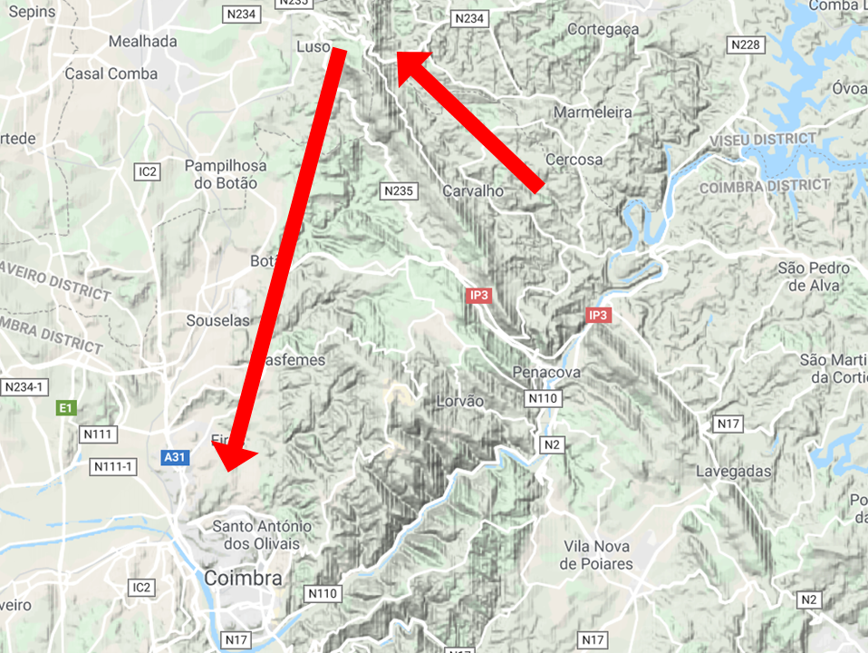
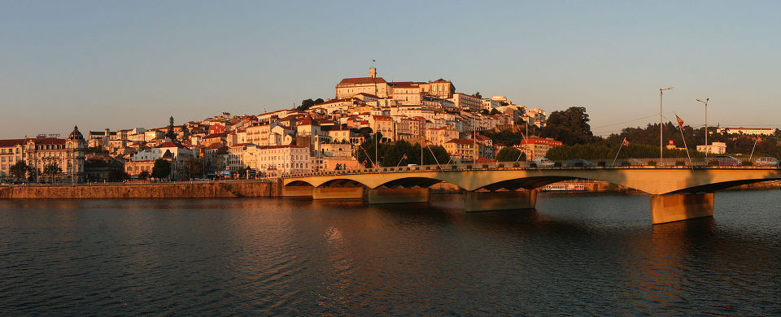
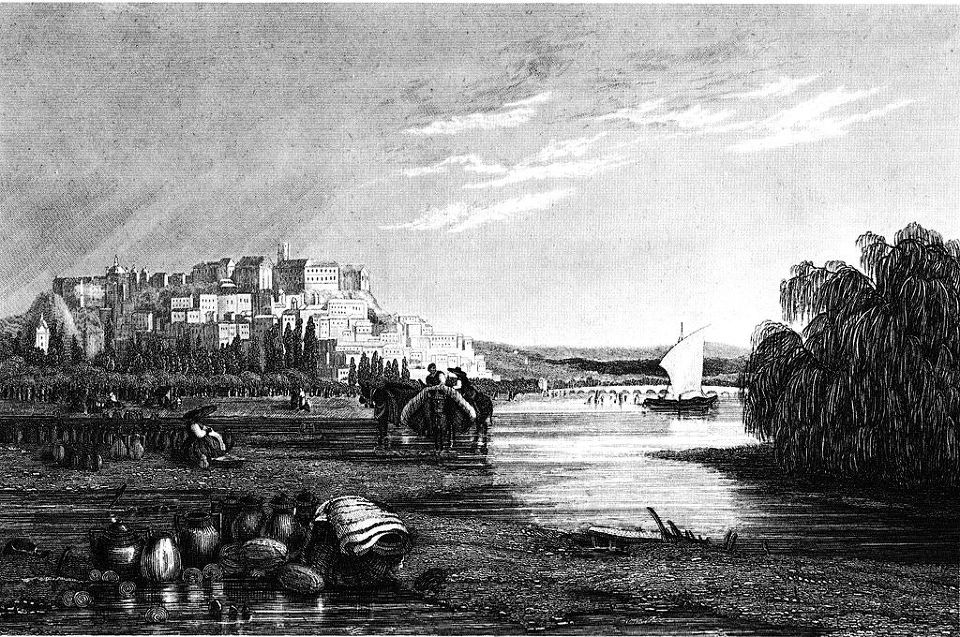
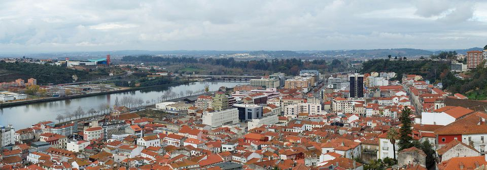

급할 수록 돌아가라 - 쿠임브라(Coimbra)의 함락
게시: 2018-11-26T06:30:00+09:00
9월 27일 오전의 이 부사쿠 전투에서 프랑스군은 약 500의 전사와 3600의 부상, 거기에 400에 가까운 실종자를 냈는데 비해 영국-포르투갈 연합군은 고작 전사 200에 부상 1000, 그리고 50의 실종자를 냈을 뿐이었습니다. 명백한 프랑스군의 참패였고, 그 원인은 마세나의 잘못된 판단이었지요. 마세나는 자신의 작전이 보기 좋게 빗나간 것에 대해 꽤 충격을 받았을 것입니다. 하지만 진짜 우수한 지휘관은 패전의 충격에서 재빨리 빠져나오는 법이지요. 그는 실패의 원인이 생각보다 웰링턴의 방어선이 훨씬 더 길게 늘어져 있어서, 가파른 능선이라는 강력한 방어선을 충분히 우회하지 못한 것이라는 것을 잘 이해했습니다. 원인이 나오면 해법도 있기 마련이고, 해법은 매우 간단했습니다. 훨씬 더 크게 우회하면 되는 것이었지요.
그 날 오후에 패전의 상처를 추스린 마세나는 다음날 아침 기병대를 출격시켰습니다. 능선에 자리잡은 웰링턴의 방어선을 우회할 도로를 찾기 위한 것이었습니다. 기병대는 곧 쉽게 우회로를 찾을 수 있었습니다. 불과 15km 정도 북쪽으로 올라가면 부사쿠 능선이 끝나는 지점이 나오고, 거기서 부사쿠 능선 뒤쪽을 돌아 쿠임브라(Coimbra) 시까지 갈 수 있었던 것입니다. 물론 부사쿠 능선을 넘는 것에 비해 30km 정도를 우회하는 것이니 거의 하루 더 행군해야 한다는 문제는 있었지만, 하루의 행군으로 피 한방울 흘리지 않고도 적군을 몰아낼 수 있다면 마다할 이유가 없었지요. 마세나는 '진작 이럴걸'이라는 후회를 마음 한구석에 품은 채 즉시 군을 이동시키기 시작했습니다.

(정말 왜 진작 저렇게 간단한 방법을 택하지 않았을까요 ? 원래 프랑스군의 강점은 화력이 아니라 기동력에 있는 것인데 말입니다.)
마세나의 3개 군단이 북쪽으로 이동하는 모습은 부사쿠 능선 위의 영국군에게도 훤히 내려다 보였습니다. 웰링턴에게도 그 의미는 명백했습니다. 이렇게 프랑스군이 부사쿠 능선 전체를 우회하려 한다는 것을 눈치챈 웰링턴에게는 3가지 옵션이 있었습니다. 첫번째가 추격 및 섬멸, 두번째가 대응 행군, 세번째가 후퇴였습니다.
원래 전투에서 적의 사상자를 극대화하려면 패주하는 적을 추격하여 섬멸전을 벌여야 했습니다. 무질서하게 패주하는 적의 등 뒤에 총알을 박아넣거나 기병대의 군도로 내리찍는 것은 모든 지휘관들이 꿈꾸는 바였지요. 그러나 비록 전날 부사쿠 전투가 연합군의 승리라고 해도, 저 아래 행군을 시작한 프랑스군은 절대 패주하는 군대가 아니었습니다. 따라서 이 옵션은 선택 사항이 아니었습니다. 그럴 경우, 연합군으로서는 프랑스군보다 더 빨리 이동하여 그 우회로의 요지를 장악하고 더 강력한 방어선을 쳐야 했습니다. 그러나 웰링턴은 이 두번째 옵션 대신 후퇴를 택했습니다. 사실 별 고민도 하지 않고 아무 미련없이 후퇴를 택했지요.
웰링턴이 후퇴하기로 결정한 것은 놀라운 일이 아니었습니다. 애초에 그는 마세나의 침공에 맞서 그냥 계속 후퇴할 생각이었거든요. 부사쿠 전투가 벌어진 것도, 마세나가 넘으려던 부사쿠 능선이 방어전에 너무 좋은 위치이다보니, 마세나와 한판 붙어보고자 하는 욕망을 이기지 못했을 뿐이었습니다. 마세나가 부사쿠에 미련을 갖지 않고 우회한다 ? 그러면 웰링턴도 미련을 갖지 않고 가던 길을 계속 가면 되는 것이었습니다. 그는 부사쿠 능선 위에 모닥불을 평소처럼 피워 연합군의 후퇴를 프랑스군이 눈치 못 채도록 하고 거기에 후위대까지 남겨두는 치밀함을 보여주며 후퇴했습니다.
하지만 웰링턴의 결정에 대해 많은 이들, 특히 포르투갈 측에서는 비난이 빗발쳤습니다. 부사쿠를 포기한다는 것은 유서깊은 도시인 쿠임브라를 포기한다는 뜻이었기 때문입니다. 그렇잖아도 전날 부사코 능선으로부터 들려오는 포성에 불안해 하던 쿠임브라 시민들은 웰링턴의 연합군이 대승을 거두었다는 소식에 축제 분위기였습니다. 그러나 그 분위기가 달아오르기도 전에 '연합군은 남쪽으로 철수하니 쿠임브라 주민들도 남김없이 피난을 가라'는 통보가 날아오자 주민들의 낙심은 그만큼 컸습니다.

(몬데고 강 북안에 자리잡은 아름다운 도시 쿠임브라입니다.)
실은 웰링턴은 애초에 쿠임브라를 사수할 생각이 조금도 없었기 때문에, 이미 쿠임브라에 대해 강제 주민 소개령을 내린 바 있었습니다. 그러나 대부분의 서민들에게 집과 상점, 농장과 창고를 버리고 떠나는 것은 삶과 죽음의 문제였습니다. 우리나라 625 전쟁 때를 생각하시면 곤란합니다. 그때는 미국이라는 초강대국이 한국을 지원해주고 있었으니 집과 논밭을 버리고 부산이나 경남으로 피난가더라도 미군이 주는 옥수수가루라도 먹고 연명할 수 있었습니다. 그러나 1810년 오만한 매부리코 영국군 장군의 명령에 따라 고향집을 버리고 떠나는 포르투갈 주민들에게는 아무 것도 주어지지 않았습니다. 프랑스군에게 맞아죽기 전에 굶어죽을 것이 뻔했습니다. 그래서, 부사쿠 전투가 끝나고 마세나의 군대가 북쪽 우회로로 이동하고 있던 9월 29일 밤에도 아직 쿠임브라 시민 80% 정도는 그대로 시내에 남아 있었습니다. 9월 29일 밤 이 사실을 알게된 웰링턴은 인정사정 보지 않았습니다. 그는 '당장 쿠임브라를 떠나지 않으면 병력을 동원하여 강제로 쫓아내겠다'라는 포고령을 내렸습니다. 쿠임브라 주민들은 어쩔 수 없이 길을 떠나야 했습니다.
앞서 웰링턴이 쿠임브라를 비롯한 각지의 주민들에게 강제 소개령을 내린 이유는 프랑스군에게 식량을 넘겨주지 않기 위함이라고 했지요. 과연 그런 소개령이 효과가 있었을까요 ? 적어도 약간은 있었던 것 같습니다. 부사쿠 전투 직전인 9월 24일 웰링턴이 마세나에게 프랑스어로 보낸 답장 편지를 보면 다음과 같은 구절이 나옵니다. (구글 번역기 썼습니다. 저 프랑스어 잘 모릅니다.)
"Je suis fâché que votre Excellence sent quelques inconvéniens personnels de ce que les Portugais quittent leurs foyers à l'approche de l'armée Française. Il est de mon devoir de faire retirer ceux que je n'ai pas les moyens de défendre ; et j'observe que les ordres que j'ai donné là-dessus n'étaient presque pas nécessaires. Car ceux qui se ressouvenaient de l'invasion de leur pays en 1807, et de l'usurpation du Gouvernement de leur Prince en tems de paix, quand il n'y avait pas un seul Anglais dans le pays, pouvaient à peine croire aux déclarations que vous faites la guerre aux Anglais seuls ; et ils pouvaient à peine trouver la conduite des soldats de l'armée Française, même sous vos ordres, envers leurs propriétés, leurs femmes et eux-mêmes, conformes aux déclarations de votre Excellence."
"프랑스군의 진격을 피해 포르투갈인들이 집을 버리고 피난을 떠난 것 때문에 각하께서 개인적인 불편함을 좀 겪고 계신다니 유감입니다. 제가 지킬 수 없는 사람들을 피난시키는 것이 제 의무인데, 사실 제가 내린 소개령은 거의 불필요한 것으로 보입니다. 이 나라에 영국인이 단 한 명도 없던 1807년에 벌어진 프랑스군의 침략과 선전포고도 없이 왕정을 찬탈당했던 것을 잘 기억하는 주민들은 각하께서 배포한 포고문, 즉 각하께서는 포르투갈이 아니라 영국군만을 적대시한다는 말씀을 거의 믿지 않습니다. 그리고 주민들은 각하께서 내리신 명령에도 불구하고 그들의 재산과 여인들과 자기 자신들에 대한 프랑스군의 행실이 각하의 포고령과는 부합하지 않는다는 것을 잘 알고 있습니다."
즉, 아마 마세나가 웰링턴에게 보낸 편지에서 '영국군이 주민들을 강제로 끌고 가는 바람에 식량을 못 구해서 불편하다, 이건 신사들의 통상적인 전쟁 규칙에 어긋난다'라고 불평을 했었나 봅니다. 과연 영국군은 집을 떠나기 싫어하는 포르투갈 주민들에게 총검을 들이대고 피난을 떠나도록 강제했을까요 ? 설마 끝내 소개령에 응하지 않을 경우 민간인들에게 폭력을 행사했을까요 ? 글쎄요. 근거가 무엇이든 간에 최소한 프랑스군은 실제로 그랬다고 생각했습니다. 부사쿠 전투 약 1주일 전인 9월 20일, 마세나가 나폴레옹의 참모장인 베르시에(Berssier)에게 보낸 편지를 보면 다음과 같은 구절이 나옵니다.
“Monseigneur, nous ne marchons qu’à travers du désert; pas une âme nulle part; tout est abandonné. Les Anglais poussent la barbarie jusqu’à faire fusiller le malheureux qui resterait chez lui; femmes, enfants, vieillards, tout fuit. Enfin on ne peut trouver nulle part un guide. Nos soldats trouvent des pommes de terre, et d’autres légumes; ils sont fort contents, et ne respirent qu’après le moment de rencontrer l’ennemi. Les marches nous ont fort peu donné de malades”.
"각하, 우리의 행군은 마치 사막을 횡단하는 것과 비슷합니다. 사람이 전혀 보이지 않습니다. 모든 것이 버려진 상태입니다. 영국놈들의 야만성은 극에 달하여 자기 집에 남아있던 불행한 주민들에게 총을 쏠 정도입니다. 여자, 아이, 노인, 모두가 도망쳤습니다. 결국 이젠 길잡이를 구할 수도 없는 상태입니다. 우리 병사들은 감자와 기타 채소류를 찾았습니다. 병사들의 사기는 좋은 편이고 적과 만날 때까지 쉬지 않을 기세입니다. 강행군으로 인한 환자는 매우 적은 편입니다."
포르투갈인들에 대한 존중이 거의 없었던 웰링턴의 명령을 수행하는데 있어서 영국군 병사들이 그다지 점잖게 굴었을 것 같지는 않습니다. 당시 영국군 병사들은 범죄자까지 포함된 사회 최하류층 출신이 대부분이었거든요. 그런 사실은 부사쿠에서 남쪽의 리스본 쪽으로 후퇴하는 길에서도 그대로 드러났습니다. 곳곳의 마을에서 영국군에 의한 약탈이 벌어졌습니다. 웰링턴이 비록 인정머리 없는 오만한 귀족이지만, 공정하다는 점에서만은 인정받을 만 했습니다. 그는 포르투갈인들 뿐만 아니라 자신의 병사들, 심지어는 장교들조차 철저히 불신하고 잔혹할 정도로 엄격하게 대했습니다. 그는 약탈 행위를 주도하다 잡힌 병사들을 현장에서 교수형에 처했고 일부 부대, 특히 픽튼(Piction) 장군 휘하의 제3 사단의 경우는 후퇴 길에 마을을 만날 경우 아예 먼길로 빙 돌아가도록 명령했습니다. 이 부대는 부사쿠 전투에서 수훈을 세운 부대였지만 후퇴 길에 일부 마을에서 약탈 행위를 벌였다는 이유로 이런 수모와 불편함을 준 것입니다.

(마세나의 침공 불과 19년 뒤인 1839년에 그려진 쿠임브라 시 외곽의 전경입니다. 당시에도 지금처럼 아름다운 모습이었던 것 같습니다.)
실은 영국군의 이런 부랑자같은 행동들 때문에 웰링턴은 마세나가 우회로를 택했다는 정보를 접하자마자 미련을 두지 않고 후퇴를 했던 것입니다. 1809년 1월 코루냐 철수 작전에서 영국군은 (비록 승리라고 주장했지만) 꽁무니를 바짝 추격해오는 프랑스군 앞에서 후퇴할 때 어떤 식으로 무너지는지 매우 좋지 않은 선례를 남긴 바 있었지요. 웰링턴은 비록 전략적인 철수라고 하더라도 후퇴는 후퇴이므로 코루냐 꼴을 되풀이하는 것에 대해 거의 강박관념 수준의 두려움을 가지고 있었다고 합니다. 특히 포르투갈에서는 10월 중순부터 우기가 시작되므로 행군하는 병사들의 사기도 떨어지겠지만 무엇보다 도로 사정이 엉망진창이 될 것이 뻔했습니다. 그래서 프랑스군이 부사쿠 능선을 우회하는 동안 연합군을 일찌감치 앞서서 후퇴시킨 것입니다.
드디어 10월 1일, 프랑스군이 쿠임브라 외곽에 나타났습니다. 그때까지 주민들은 다 도시를 비웠을까요 ? 불행히도 그렇지 못했습니다. 여유가 있던 상류층 주민 대부분은 이미 도시를 버린 뒤였지만 영국군의 압박에도 불구하고 상당수 주민들은 어떻게든 되겠지 하는 심정으로 집에 남아 있었습니다. 어떻게 보면 정말 어리석은 일이었지만 당장 피난 길을 떠나면 먹고 살 길이 막막한 가난한 주민들로서는 어쩔 수 없는 선택이었습니다. 그런 것을 보면 영국군이 소개령에 따르지 않는 주민들에 대해 폭력을 행사했다는 것도 꼭 믿을 이야기는 아닌 것 같습니다.
그러나 아침에 '프랑스놈들이 나타났다'라는 비명소리가 거리 한쪽에서 터져나오자, 맹수같은 프랑스 병사들의 난폭함이 갑자기 무서워진 일부 주민들이 마지막 순간에 피난을 떠나기 시작했습니다. 두려움은 전염성이 짙은 것입니다. 일부 주민들이 거리를 가로질러 피난길을 서두르는 모습을 보자 나머지 주민들도 공포에 사로잡혀 앞서거니 뒷서거니 무작정 피난길에 나섰습니다. 곧 거리가 가득 찼고 몬데고(Mondego) 강을 건너 남쪽으로 향하는 다리는 교통 제층이 생겨 길이 꽉 막힐 지경이었습니다. 다행히 아직 우기가 시작되지 않아 몬데고 강에는 1m~1.5m 정도로 얕은 여울이 곳곳에 있어 주민들은 이 여울들을 통해 피난에 나섰습니다. 아무 준비없이 공포에 사로잡혀 떠나는 피난길 광경은 주민들의 비명과 울음소리로 매우 참혹했다고 합니다.

(현재의 쿠임브라 시와 몬데고 강의 전경입니다.)
이렇게 허둥지둥 나서는 피난이라면 겨우내 먹으려 저장해두었던 곡물과 저장식품 등을 다 싸들고 나올 수 없었을 것입니다. 주민들이 남기고 간 식량은 고스란히 프랑스군의 손아귀에 들어가 웰링턴의 혀를 차게 만들었습니다. 그러나 쿠임브라는 웰링턴의 후퇴 작전에 나름대로 역할을 수행했습니다. 그 동안의 고달픈 행군길에 배가 고팠던 프랑스군은 먹을 것이 있는 도시에 들어가자마자 군기가 문란해져 식량, 특히 와인을 약탈하며 행군을 멈춰 버린 것입니다. 마세나로서도 굶주리고 지친 병사들이 좀 쉴 틈을 가져야 한다고 생각했습니다. 영국군이 일찌감치 총퇴각에 들어가서 어차피 따라잡기도 힘든 마당에 서두를 필요가 없다고 본 것이지요. 프랑스군 주력은 이 도시에 4일간이나 머물렀고, 10월 5일이 되어서야 본격적인 추격에 나섰습니다. 마세나는 리스본 정복을 확신했습니다.
그러나 10월 5일, 추격에 나섰던 선발 부대가 잡은 영국군 낙오병은 천만뜻밖의 정보를 불었습니다.
Source : https://en.wikipedia.org/wiki/Battle_of_Bussaco
http://www.historyofwar.org/articles/battles_bussaco.html
http://www.historyofwar.org/articles/campaign_massena_portugal.html
https://www.napoleon-series.org/research/miscellaneous/c_Tojal8.html
https://www.lifeofwellington.co.uk/commentary/chapter-twenty-three-torres-vedras-october-1810-to-february-1811/
http://www.wtj.com/archives/wellington/1810_09c.htm